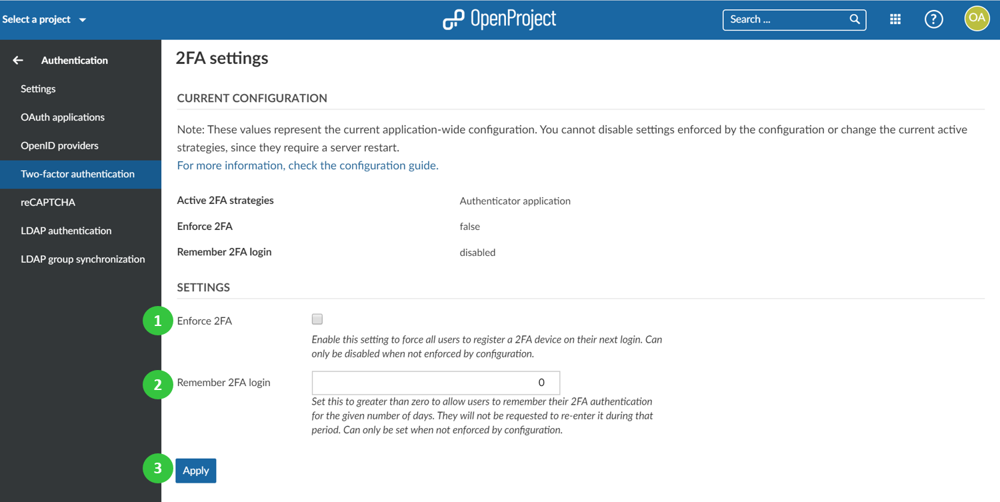

Two-factor authentication (Premium feature)
To activate and configure two-factor authentication for OpenProject, navigate to -> Administration -> Authentication and choose -> two-factor authentication.
You can configure the following options:
- Enforce two-factor authentication (2FA) for the whole system. All users will be forced to register a 2FA device on their next login.
- Remember 2FA login for a given number of days, e.g. 30 days.
- Press the blue Apply button to save your changes.
